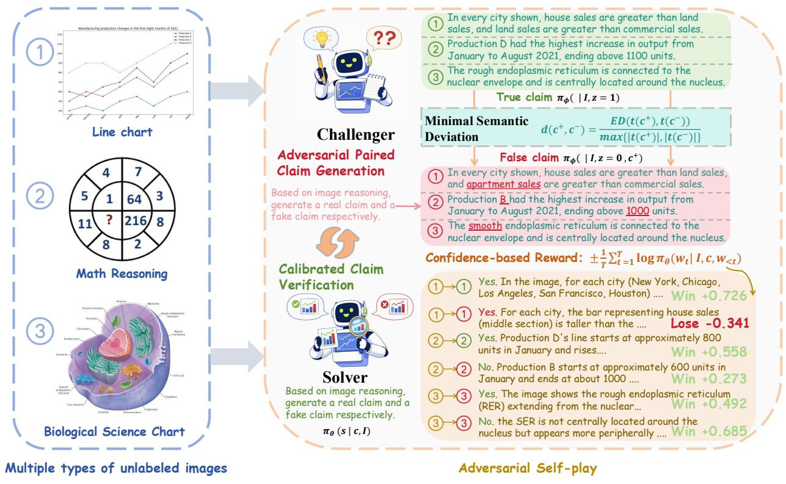

先说结论。代表“视觉语言模型内部自监督信号”路线，对低标注视觉推理训练有参考价值。 把图像接地监督从模型间交互中生成，减少高质量人工标注、外部 reward model 和图像编辑工具依赖。
Figureure 1 · Performance comparison of DUEL with SOTA post-training methods for VLMFigure 1 Performance comparison of DUEL with SOTA post-training methods for VLMs. All methods are trained on the same base model. The horizontal axis shows each benchmark with the base model’s accuracy in parentheses; the vertical axis shows accuracy improvement (∆%). Benchmarks are grouped into three categories: Mathematical Reasoning, Chart & Document understanding, and General Reasoning. DUEL demonstrating broad and consistent improvement across all task categories without any human annotations.这张图/表用于判断 DUEL 的实验收益来自哪里。重点看替换、消融或跨模型设置下趋势是否一致，而不是只看单个最高分。

Figureure 3 · Overall framework of DUELFigure 3 Overall framework of DUEL. Given an unlabeled image, the Challenger first generates an image-supported true claim and then constructs a minimally perturbed hard-negative false claim. The Solver verifies each claim against the image, and an outcome-based confidence reward provides the training signal to update both agents through adversarial self-play.这张图概括 DUEL 的整体方法流程。阅读时先看模块之间传递的训练信号，再看作者如何把目标拆成可优化的子问题。